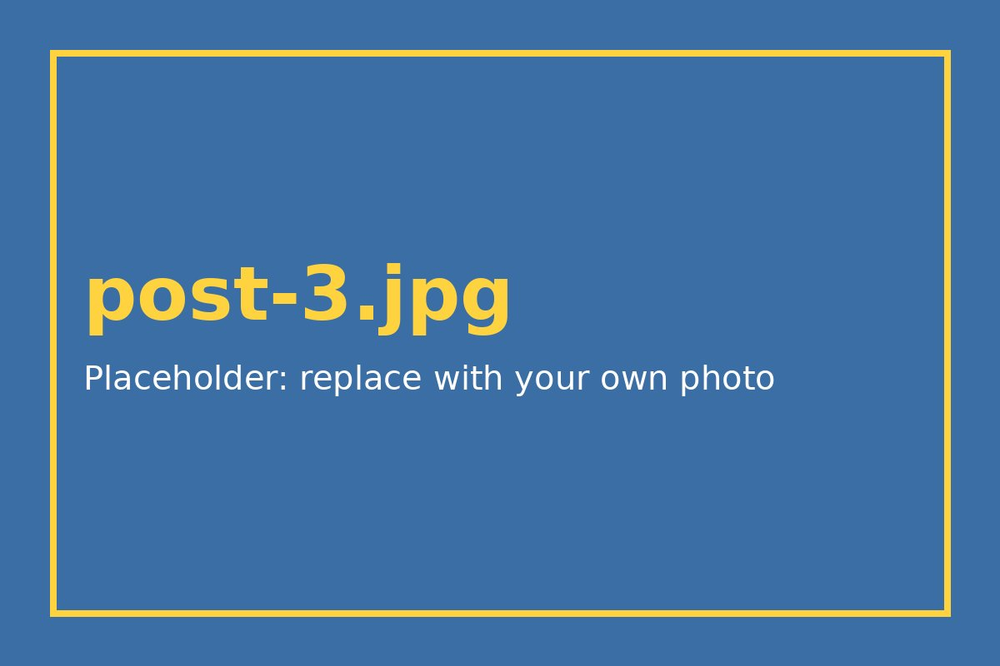

Home / Guides
How to Style Baggy Jeans: 5 Outfit Ideas
Baggy jeans are easy to find secondhand because the style keeps coming back. The trick is balancing the volume. Here are five outfits that work.

1. Fitted tee and chunky sneakers
A close-fitting plain tee keeps the look clean. Add thick-soled sneakers so the hem sits on top of the shoe.
2. Cropped top or short jacket
Shorter tops show your waist, which stops the jeans from swallowing your shape.
3. Oversized shirt, half tucked
Tuck in only the front. It adds shape without losing the relaxed feel.
4. Knit vest over a long-sleeve tee
A thrifted knit vest adds colour and texture and works well in cooler months.
5. All-denim, two shades
Pair baggy jeans with a jacket in a different wash. Matching exactly looks like a uniform, while a contrast looks planned.
Fit tip
If the jeans are too long, cuff them twice instead of cutting. You keep the option to wear them longer later.